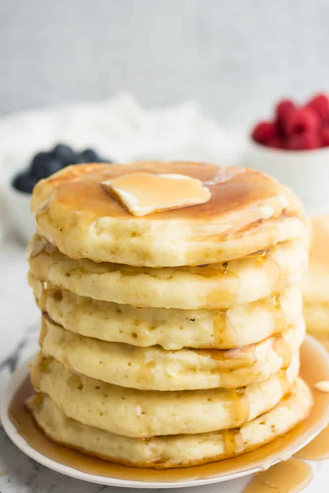

Vegan Pancakes

Description
Pancakes are a staple American breakfast food. However, the traditional recipe is
not vegan. This recipe allows our friends and family who are vegan to enjoy this
classic meal.
Ingredients
- 1 1/2 cups flour
- 1 tablespoon baking powder
- 1/2 teaspoon salt
- 2 tablespoons sugar
- 1 cup nut or soy milk
- 1/2 cup water
- 2 tablespoons canola oil
Steps
- Whisk all dry ingredients.
- Whisk together all wet ingredients.
- Combine both mixtures.
- Heat a pan or griddle over medium-high heat. Grease pan and drop about
1/3 cup mixture into it. Cook until bubbles form, and then flip. Cook
until the pancake is golden brown throughout.